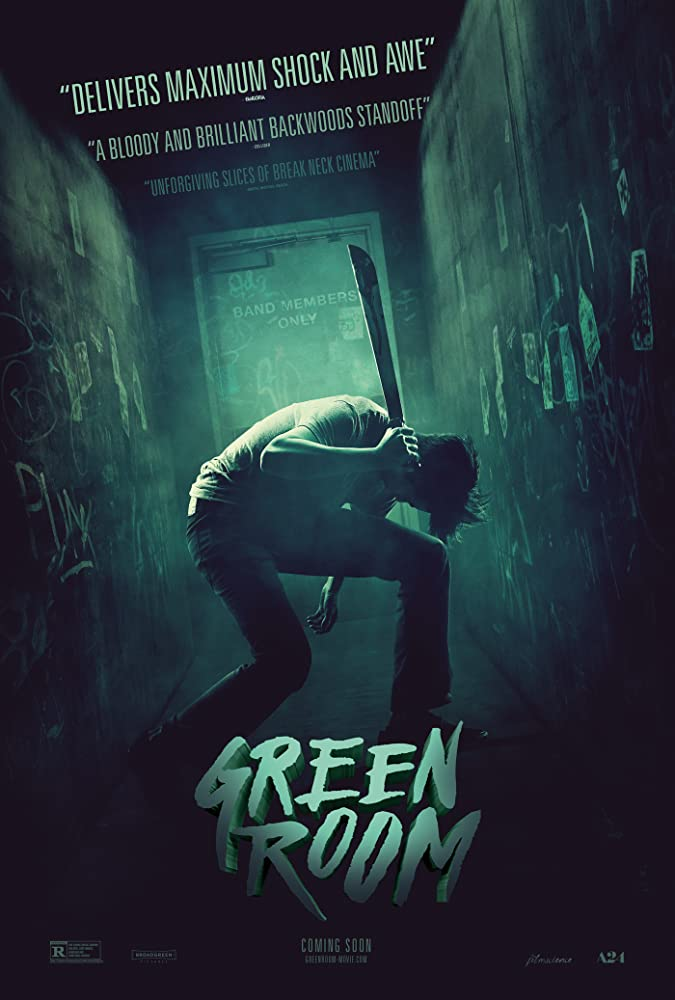
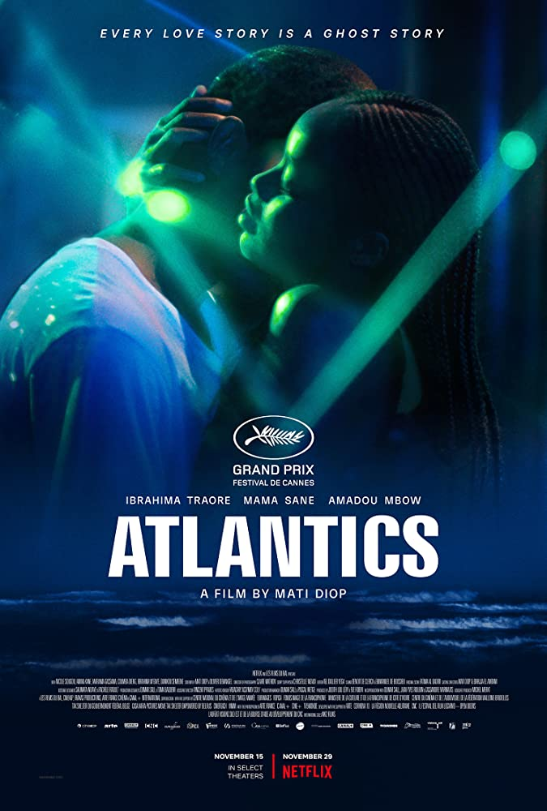

MOVIE SUGGESTION 1:
Green Room
Directed by Jeremy Salunier
Starring:Anton Yelchin, Imogen Poots, Alia Shawkat, Patrick Stewart
Plot: A punk rock band is forced to fight for survival after witnessing a murder at a neo-Nazi skinhead bar.
Poster:
MOVIE SUGGESTION 2:
Children of Men
Directed by Alfonso Cuarón
Starring:
Plot: In 2027, in a chaotic world in which women have become somehow infertile, a former activist agrees to help transport a miraculously pregnant woman to a sanctuary at sea.
Poster:
MOVIE SUGGESTION 3:
Atlantics
Directed by Mati Diop
Starring: Mame Bineta Sane, Amadou Mbow, Traore
Plot:In a popular suburb of Dakar, workers on the construction site of a futuristic tower, without pay for months, decide to leave the country by the ocean for a better future. Among them is Souleiman, the lover of Ada, promised to another
Poster: